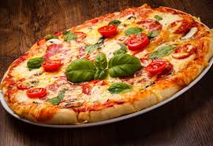
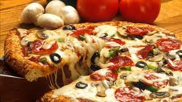
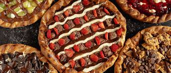
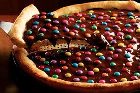

Bem-vindo à Pizzaria G&G!
Explore nosso cardápio, conheça nossa história e entre em contato para reservar uma mesa.
Pizzas Salgadas!
Conheça nossos sabores e monte a sua pizza ideal.

Pizza Grande
35 cm, 8 fatias, até 2 sabores por pizza.
Serve 4 pessoas.
A partir de R$ 1,50

Pizza Pequena
25 cm, 4 fatias, até 2 sabores
Serve 2 pessoas
A partir de R$ 1,20
Pizzas Doces!
Para adocicar sua vida!

Pizza Grande
35 cm, 8 fatias, até 2 sabores por pizza.
Serve 4 pessoas.
A partir de R$ 1,50

Pizza Pequena
25 cm, 4 fatias, até 2 sabores.
Serve 2 pessoas.
A partir de R$ 1,20
Bebidas!
Porque pizza com água não dá, né.
Latinha de Guaraná
A partir de R$ 0,50

Latinha de Coca-Cola
Pior que a de Guaraná
A partir de R$ 35,00